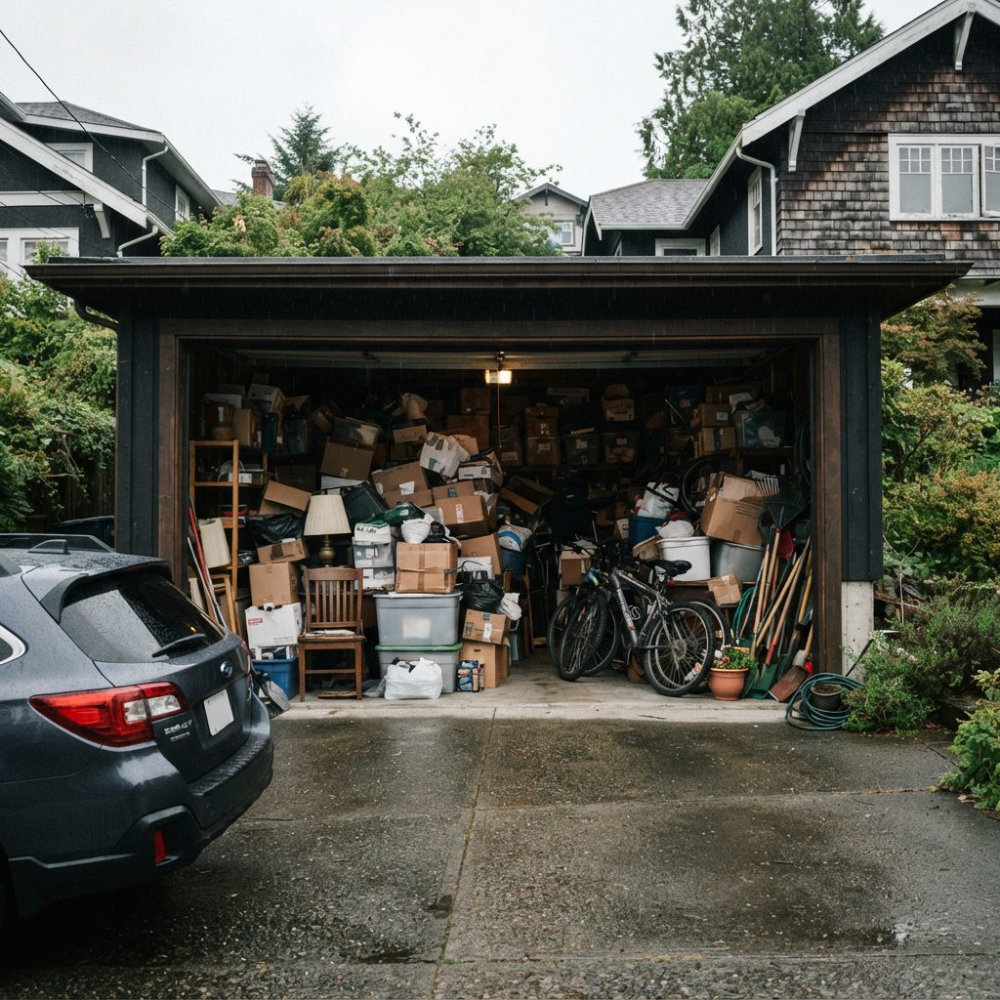
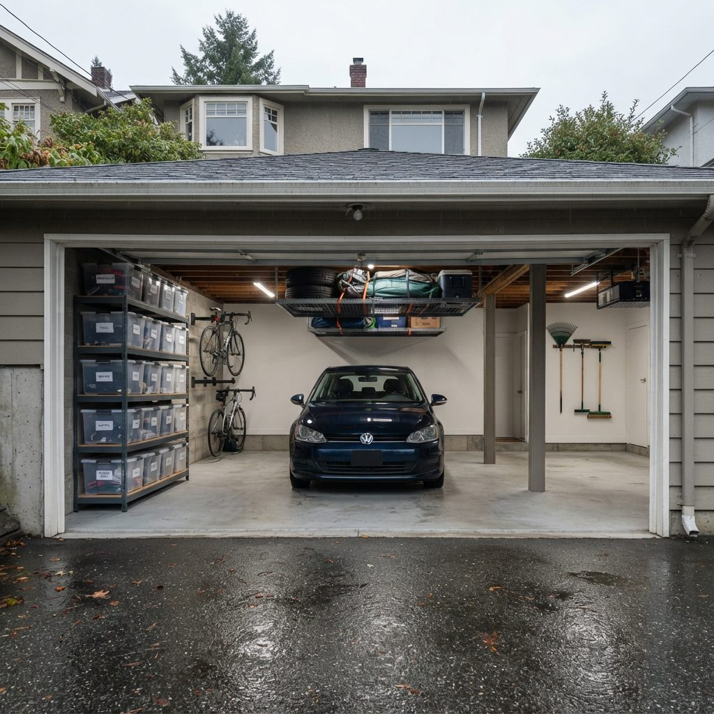
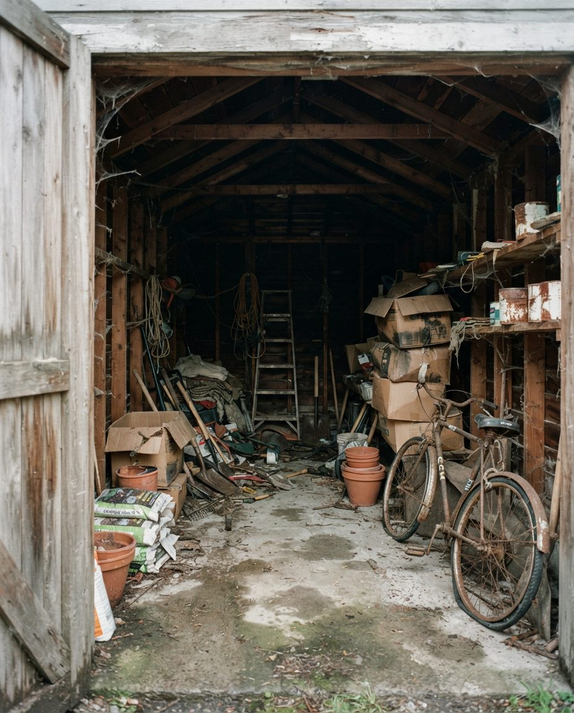
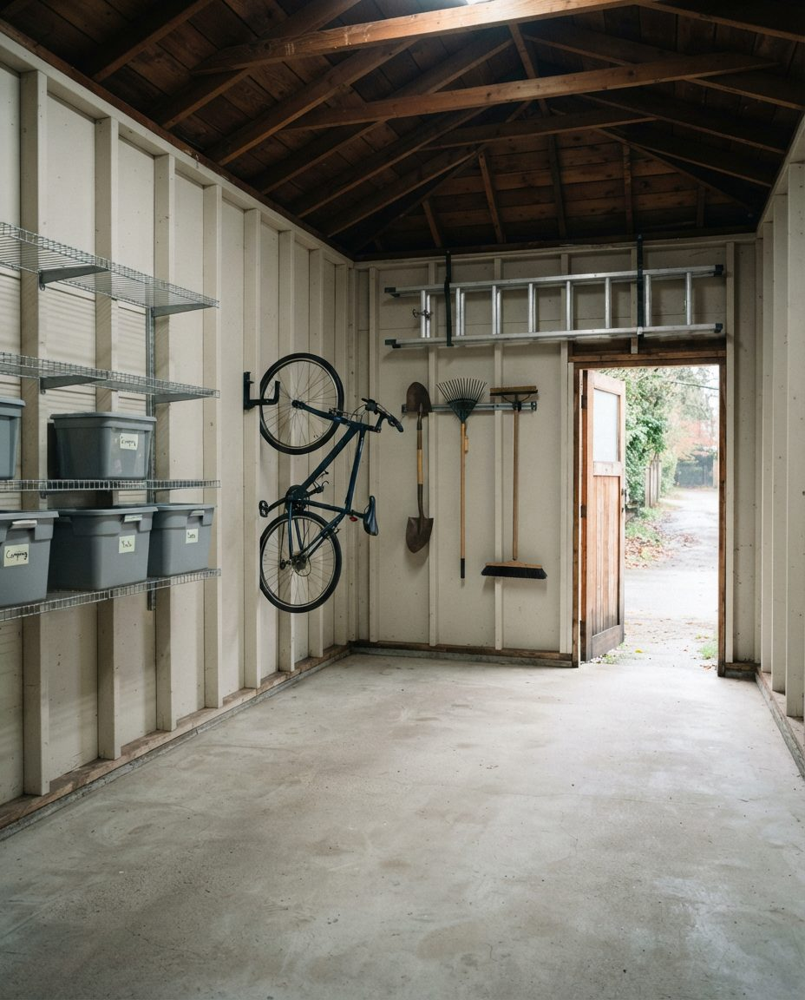

Most Vancouver garage cleanout quotes bury the disposal cost inside a "truck load" price and hope you don't ask. We publish it. Below are the actual 2026 Metro Vancouver tipping fees you're paying for, what qualifies for free drop-off, and how sorting properly cuts a disposal bill roughly in half.


Full clear-out, sorted before it was hauledReuse first, stewardship depots second, landfill last — which is also the order that costs least. Every disposal receipt itemised.
Vancouver garage cleanouts typically land between $399 and $1,400 all in. That's higher than the North American average, and there are three specific local reasons why.
| Garage & load | Typical total | Time on site | Roughly what's in it |
|---|---|---|---|
| Single car, light load | $399–$550 | Half day | Boxes, old sports gear, a few furniture pieces |
| Single car, packed | $550–$700 | Half to full day | Floor to ceiling, some heavy items, mixed materials |
| Double car, moderate | $700–$900 | Full day | Contents on both sides, appliances, workshop leftovers |
| Double car, packed | $900–$1,400 | Full day, sometimes two | No floor visible, renovation debris, decades of storage |
| Estate / downsizing | $1,200–$3,000+ | Two to four days | Full contents, careful sorting, appraisal flagging |
| Hoarding-level | Quoted in phases | Multi-day | Assessed on site; you can stop after any phase |
Roughly 60–70% of that total is labour and the balance is disposal. We itemise disposal at cost and show you the tipping receipts. That is a deliberate choice: it means you can see directly that sorting saved you money, which is the whole argument for doing it properly.
These are the rates that apply to your load. New rates took effect 2 January 2026, with a further regional schedule change from 1 July 2026. Verify current rates with Metro Vancouver before relying on these for your own trip — they change annually and we update this page when they do.
| Material | 2026 rate | Notes for garage cleanouts |
|---|---|---|
| Mixed garbage | Increased ~4.0–5.5% in Jan 2026 (+$7/tonne) | Minimum charges apply to small loads — one bag can still cost the minimum fee |
| Construction & demolition debris | $194 / tonne | Old shelving, plywood, deck offcuts, renovation leftovers |
| Residential drywall | $210 / tonne (Vancouver Landfill) | The single most expensive common garage item by weight |
| Yard trimmings & clean wood | $124 / tonne | Much cheaper than mixed garbage — worth separating |
| Mattresses & box springs | $20 / unit | Per piece; a mattress and box spring counts as two |
| Reusable goods (Zero Waste Centre) | Free | 8588 Yukon St — the cheapest route for anything still usable |
| Paint, solvents, motor oil, antifreeze | Free at stewardship depots | Banned from general disposal; must be routed separately |
| Electronics & small appliances | Free at designated depots | Covered by BC product stewardship |
| Tyres | Free at participating retailers | Common garage find; never needs to go in a paid load |
At $210 per tonne, leftover drywall is the most expensive thing likely to be sitting in your Vancouver garage. Sheets stacked against a wall after a renovation weigh far more than people estimate — a single 4×8 sheet of half-inch drywall is roughly 23 kg, so a stack of twenty is close to half a tonne. Mixed into a general load, it silently adds a hundred dollars or more. Separated, it's still expensive but at least it's visible and you can decide.
A surprising amount of a typical Vancouver garage costs nothing to get rid of, provided it goes to the right place. This is the single largest lever on your cleanout cost.
Accepts a broad range of reusable and recyclable material free of charge. For a garage cleanout this typically covers usable household goods, many recyclables, and a range of materials that would otherwise be tipped as mixed garbage. This is our first stop on most jobs.
British Columbia runs extended producer responsibility programmes that make manufacturers responsible for end-of-life handling. For a garage, that means these are accepted free:
Usable tools, furniture, sporting goods, camping gear and bikes go to charity rather than landfill. Bikes have particularly strong reuse channels in Vancouver. Every item diverted this way is a tipping fee you don't pay — donation isn't just the nice option here, it's the cheap one.
Nearly every Vancouver garage we clear contains something that can't legally go in a general load. Household hazardous waste is banned from Metro Vancouver disposal facilities, and loads found to contain it attract surcharges.
| Item | Why it's restricted | Correct route |
|---|---|---|
| Leftover paint & stain | Solvents and heavy metals leach | Product Care depot — free |
| Motor oil & filters | One litre contaminates a large volume of water | BC Used Oil depot — free |
| Antifreeze | Toxic; also attracts animals | BC Used Oil depot — free |
| Gasoline & jerry cans | Flammable; banned from general loads | Designated HHW depot |
| Propane tanks & camp canisters | Explosion risk in compaction equipment | Specific depots only; never a general load |
| Pesticides & pool chemicals | Acute toxicity; reactive in mixed loads | Designated HHW depot |
| Car & power tool batteries | Lead, acid, lithium fire risk | Free stewardship return |
| Asbestos (pre-1990 materials) | Regulated; strict WorkSafeBC handling rules | Certified abatement contractor only — we stop work and tell you |
If your garage is part of a pre-1990 Vancouver property, old vinyl floor tile, sheet flooring backing, pipe wrap, textured coatings and some cement board may contain asbestos. If we suspect it, we stop and tell you, and you'll need testing and if necessary a certified abatement contractor before we continue. This is not us being cautious for the sake of it — WorkSafeBC rules on asbestos are strict, and given Vancouver's housing age it comes up more often than you'd expect.
This is the core of how we price differently from a volume-based junk hauler, and it's worth following the arithmetic.
A junk removal company is paid by truck volume. Every cubic foot in the truck is revenue, whether it's a broken chair or a bag of returnable bottles. There is no commercial incentive to divert anything — diverting reduces the bill.
We charge for labour and pass disposal through at cost. That flips the incentive: every item we route to free stewardship disposal, free reuse drop-off or donation is money off your total. A typical packed double garage might contain four litres of paint, two car batteries, a set of tyres, an old TV, three bags of returnable containers, a usable bike, a working lawnmower and a couch. Thrown in a truck, that's all billable volume plus tipping fees. Sorted, most of it costs nothing to dispose of.
In practice, careful sorting reduces the disposal portion of a Vancouver garage cleanout by roughly half. It takes longer on site — that's the honest trade — but on most jobs the disposal saving more than covers the extra labour hour, and you get the diversion summary at the end.
| GarageScape cleanout | Junk removal company | |
|---|---|---|
| Priced on | Labour, with disposal at cost | Truck volume |
| Sorts with you | Yes — keep / donate / recycle / dispose | No — you decide beforehand |
| Handles hazardous materials | Routed to correct depots | Often refused or surcharged |
| Donation routing | Yes, and it lowers your bill | Sometimes, but it doesn't lower your bill |
| Leaves the garage swept | Yes | Generally not |
| Can organise what stays | Yes | No |
| Typical Vancouver cost | $399–$1,400 | $150–$650 by load size |
| Best when | You need decisions made and the space returned usable | You've already got a pile and just need it gone |
Straight answer: if you've already sorted the garage and have a pile ready to go, book a junk removal company. They'll be cheaper and they're good at it. Call us when the hard part isn't the lifting — it's deciding, sorting, handling the paint and the batteries properly, and getting the space back into a state you can actually use.


Back-lane garage cleared before a laneway buildClearing the existing garage is the first physical step of any laneway project — and far cheaper done before your contractor mobilises at trade rates.
A different pace and a different standard of care. Nothing leaves without being seen. Documents, photographs and personal effects are separated and set aside rather than binned. Items of possible value are flagged for appraisal rather than donated by default. We work to executor timelines and coordinate with realtors where a listing date is driving the schedule.
Tenancy end dates in BC are hard deadlines, and a garage full of an outgoing tenant's belongings is a common landlord problem. Note that the Residential Tenancy Act sets out specific obligations around a tenant's abandoned personal property — get the process right before disposing of anything, because a landlord who bins a tenant's possessions incorrectly is exposed. We work to whatever process your property manager or lawyer sets.
An empty, clean garage photographs as square footage. A full one photographs as a storage problem, and buyers price that in. Pre-listing cleanouts are a large share of our Vancouver work and we're used to working backwards from a photography date.
Vancouver's laneway housing programme puts new homes where the old garage stands, so clearing that garage is the first physical step of the project. Doing it before your contractor mobilises is much cheaper than having a construction crew handle it at trade rates — and it means the contents get sorted properly rather than skipped wholesale.
Vancouver's atmospheric river events have produced repeated flooding across low-lying parts of the region. Water-damaged garage contents need fast removal, because in this climate a wet cardboard box becomes a mould source within days rather than weeks.
Most land between $399 and $1,400 all in. Single-car with a moderate load is typically $399–$650; a packed double is $700–$1,100; estate and hoarding-level cleanouts run $1,200 and up. Roughly 60–70% is labour, the rest disposal, itemised at cost rather than marked up. Disposal is genuinely expensive here — Metro Vancouver tipping fees rose again in January 2026, C&D debris is now $194/tonne and residential drywall $210/tonne at the Vancouver Landfill.
The Vancouver Zero Waste Centre at 8588 Yukon St takes a wide range of reusable and recyclable material free. Paint, oil, antifreeze, batteries, electronics, tyres and small appliances are covered by BC stewardship programmes and accepted free at designated depots. What costs money is mixed garbage, mattresses, construction debris and drywall — so a well-sorted cleanout can halve the disposal bill. That's exactly why we sort before we haul.
We route them correctly rather than landfilling them. Paint, solvents, motor oil, filters, antifreeze and gasoline go to Product Care and BC Used Oil depots free. Propane tanks, pool chemicals and pesticides need specific handling and can't go in a general load. This is a legal point as well as an environmental one: household hazardous waste is banned from Metro Vancouver disposal facilities and loads containing it attract surcharges.
Often, depending on the day and your location in Metro Vancouver. Same-day and next-day work is usually driven by real estate deadlines, tenancy end dates and estate situations. One constraint: disposal facilities have fixed hours, so a late booking may mean the load is held overnight and tipped next morning. That doesn't change your price.
They go to reuse, not landfill — usable furniture, tools, sporting goods, bikes and household items to local charities and reuse organisations. Bikes especially have strong reuse channels in Vancouver. This isn't only goodwill: every diverted item avoids a tipping fee, which lowers your bill. You get a summary of what was donated, recycled and landfilled.
For the initial walkthrough, yes — that's when we agree what stays and what goes. After that many clients leave us to it. For estate and out-of-province owners we work from a photo-based scope and a written keep list, and we photograph anything ambiguous before it leaves rather than deciding for you.
Junk removal is a hauling service priced by truck volume — you decide what goes, they load it. A cleanout is a labour service: we sort with you, separate reuse from recycling from disposal, handle hazardous materials correctly, sweep down and hand back a usable garage. If you already have a pile at the kerb and just need volume gone, a junk removal company will be cheaper and we'll tell you so.
Yes, and it's a significant part of our work. Estate cleanouts need a different pace: nothing leaves without being seen, documents and photographs are separated rather than binned, and possible valuables are flagged for appraisal rather than donated by default. We work to executor timelines and coordinate with realtors on listing dates.
Single-car garage: usually half a day. Full double: a full day. Estate or hoarding-level: two to four days, quoted in phases so you can stop at any point. Back-lane garages in older Vancouver neighbourhoods sometimes take longer than the volume suggests, purely because lane access limits how close the truck can get.
Free on-site quote. Fixed labour price, disposal itemised at cost with receipts, and a diversion summary at the end.
Serving Vancouver, Burnaby, Richmond, North & West Vancouver, New Westminster, Coquitlam, Surrey and Delta.